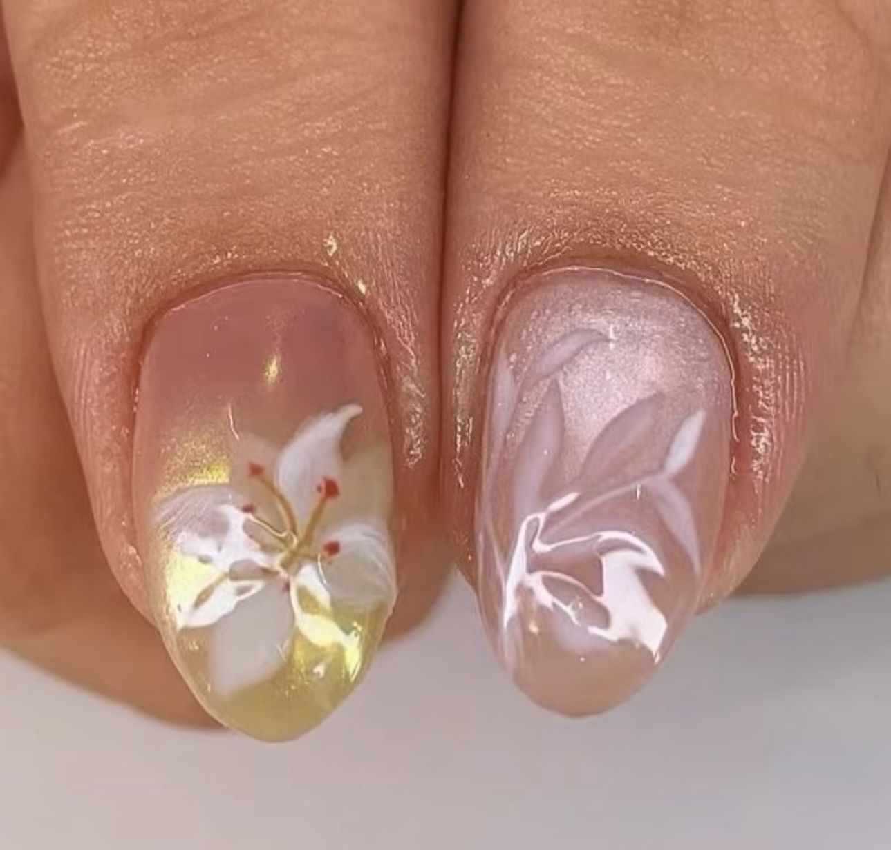
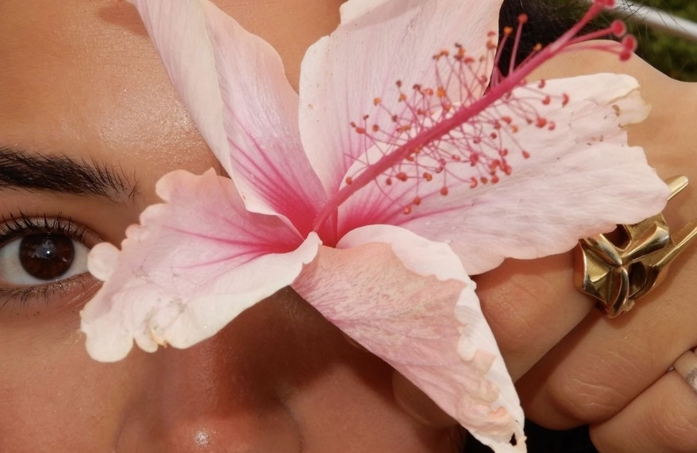

02 研究洞察

【国家级大创项目】
她经济与女性消费心理
"身体消费的双刃剑: 悦己与被物化的博弈"
研究对象样本: 小红书平台女性用户
方法 & 框架SPSS26.0 + MAXQDA + 扎根理论 / 媒介中介效应模型
核心发现
- • 中介效应：浏览时间是影响自我认同的关键因素 (p<0.05)。
- • 消费异化：67%追求"悦己", 但82%仍在意"他者目光"。
- • 全景敞视机制：小红书从私域转向公共评价场域。

【毕业论文研究】
女性"四不像"困境
"社会转型期的性别权力结构失衡"
理论视角马克思主义女性主义 × 社会转型期理论
研究方法文献研究法 + 案例分析法
核心发现
- • 困境：旧秩序与新秩序碰撞，双重剥削（职场+家庭）隐形化。
- • 虚假独立：资本合谋制造消费主义下的“独立幻象”。
- • 理想：超越零和思维，追求制度与个体的“差异平等”。
【前沿技术研究】
面向公众的可解释AI (XAI)
"信任重构：从黑盒到透明的逻辑进化"
信任赤字与突破价值
- • 现状：黑盒AI导致隐私担忧，高风险领域（医疗/金融）合规需求。
- • 业务：透明化决策赋予掌控感，提升 CVR、留存率、CX指数约34%。
- • 前景：电商“为什么推荐?”与营销“数据使用”的可视化。